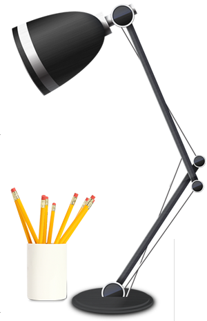

新翼品牌设计最大的优势在于人，在于我们的员工。无论是技术开发、设计方面我们的员工绝对技术过硬，态度诚恳。
新翼品牌设计的成员都是设计界的精英，受过高等的艺术深造，经过多重工作实战磨练。我们的实力和配合绝对可以胜任任何有具有挑战性的设计工作！
新翼品牌设计员工凭借着对互联网行业的独到见解和丰富经验，在项目策划、项目管理、设计制作、技术开发和网络传播等多方面寻求平衡；在项目过程中，通过周密的策划、深入的调查、理性的分析、精妙的创意、专业的实施，并同客户的实际情况和具体需求进行良好结合，为不同类型的客户提供最佳的互联网应用定制解决方案，帮助客户在新的全球化互联网环境中保持优势。
秉承先进的互联网应用技术和领先的网络传播理念，建立了科学的管理机制和强有力的服务体系；专业资深的互联网应用技术服务团队将以最优化的资源配置与最佳的网络传播方式为源动力，为庞大而优秀的客户群体打造网络新形象。
唱响音乐之声，传承中华文化文明唱响音乐之声，传承中华文化文明唱响音乐之声，传承中华文化文明唱响音乐之声，传承中华文化文明唱响音乐之声，传承中华文化文明唱响音乐之声，传承中华文化文明唱响音乐之声，传承中华文化文明唱响音乐之声，传承中华文化文明唱响音乐之声，传承中华文化文明唱响音乐之声，传承中华文化文明唱响音乐之声，传承中华文化文明唱响音乐之声，传承中华文化文明唱响音乐之声，传承中华文化文明唱响音乐之声，传承中华文化文明唱响音乐之声，传承中华文化文明唱响音乐之声，传承中华文化文明唱响音乐之声，传承中华文化文明唱响音乐之声，传承中华文化文明唱响音乐之声，传承中华文化文明唱响音乐之声，传承中华文化文明唱响音乐之声，传承中华文化文明唱响音乐之声，传承中华文化文明唱响音乐之声，传承中华文化文明唱响音乐之声，传承中华文化文明唱响音乐之声，传承中华文化文明唱响音乐之声，传承中华文化文明唱响音乐之声，传承中华文化文明唱响音乐之声，传承中华文化文明唱响音乐之声，传承中华文化文明唱响音乐之声，传承中华文化文明唱响音乐之声，传承中华文化文明唱响音乐之声，传承中华文化文明唱响音乐之声，传承中华文化文明唱响音乐之声，传承中华文化文明唱响音乐之声，传承中华文化文明唱响音乐之声，传承中华文化文明唱响音乐之声，传承中华文化文明唱响音乐之声，传承中华文化文明唱响音乐之声，传承中华文化文明唱响音乐之声，传承中华文化文明唱响音乐之声，传承中华文化文明唱响音乐之声，传承中华文化文明唱响音乐之声，传承中华文化文明唱响音乐之声，传承中华文化文明唱响音乐之声，传承中华文化文明唱响音乐之声，传承中华文化文明唱响音乐之声，传承中华文化文明唱响音乐之声，传承中华文化文明唱响音乐之声，传承中华文化文明唱响音乐之声，传承中华文化文明唱响音乐之声，传承中华文化文明唱响音乐之声，传承中华文化文明唱响音乐之声，传承中华文化文明唱响音乐之声，传承中华文化文明唱响音乐之声，传承中华文化文明唱响音乐之声，传承中华文化文明唱响音乐之声，传承中华文化文明唱响音乐之声，传承中华文化文明唱响音乐之声，传承中华文化文明唱响音乐之声，传承中华文化文明唱响音乐之声，传承中华文化文明唱响音乐之声，传承中华文化文明唱响音乐之声，传承中华文化文明唱响音乐之声，传承中华文化文明唱响音乐之声，传承中华文化文明唱响音乐之声，传承中华文化文明123 唱响音乐之声，传承中华文化文明唱响音乐之声，传承中华文化文明唱响音乐之声，传承中华文化文明唱响音乐之声，传承中华文化文明唱响音乐之声，传承中华文化文明唱响音乐之声，传承中华文化文明唱响音乐之声，传承中华文化文明唱响音乐之声，传承中华文化文明唱响音乐之声，传承中华文化文明唱响音乐之声，传承中华文化文明唱响音乐之声，传承中华文化文明唱响音乐之声，传承中华文化文明唱响音乐之声，传承中华文化文明唱响音乐之声，传承中华文化文明唱响音乐之声，传承中华文化文明唱响音乐之声，传承中华文化文明唱响音乐之声，传承中华文化文明唱响音乐之声，传承中华文化文明唱响音乐之声，传承中华文化文明唱响音乐之声，传承中华文化文明唱响音乐之声，传承中华文化文明唱响音乐之声，传承中华文化文明唱响音乐之声，传承中华文化文明唱响音乐之声，传承中华文化文明唱响音乐之声，传承中华文化文明唱响音乐之声，传承中华文化文明唱响音乐之声，传承中华文化文明唱响音乐之声，传承中华文化文明唱响音乐之声，传承中华文化文明唱响音乐之声，传承中华文化文明唱响音乐之声，传承中华文化文明唱响音乐之声，传承中华文化文明唱响音乐之声，传承中华文化文明唱响音乐之声，传承中华文化文明唱响音乐之声，传承中华文化文明唱响音乐之声，传承中华文化文明唱响音乐之声，传承中华文化文明唱响音乐之声，传承中华文化文明唱响音乐之声，传承中华文化文明唱响音乐之声，传承中华文化文明唱响音乐之声，传承中华文化文明唱响音乐之声，传承中华文化文明唱响音乐之声，传承中华文化文明唱响音乐之声，传承中华文化文明唱响音乐之声，传承中华文化文明唱响音乐之声，传承中华文化文明唱响音乐之声，传承中华文化文明唱响音乐之声，传承中华文化文明唱响音乐之声，传承中华文化文明唱响音乐之声，传承中华文化文明唱响音乐之声，传承中华文化文明唱响音乐之声，传承中华文化文明唱响音乐之声，传承中华文化文明唱响音乐之声，传承中华文化文明唱响音乐之声，传承中华文化文明唱响音乐之声，传承中华文化文明唱响音乐之声，传承中华文化文明唱响音乐之声，传承中华文化文明唱响音乐之声，传承中华文化文明唱响音乐之声，传承中华文化文明唱响音乐之声，传承中华文化文明唱响音乐之声，传承中华文化文明唱响音乐之声，传承中华文化文明唱响音乐之声，传承中华文化文明唱响音乐之声，传承中华文化文明唱响音乐之声，传承中华文化文明123 唱响音乐之声，传承中华文化文明唱响音乐之声，传承中华文化文明唱响音乐之声，传承中华文化文明唱响音乐之声，传承中华文化文明唱响音乐之声，传承中华文化文明唱响音乐之声，传承中华文化文明唱响音乐之声，传承中华文化文明唱响音乐之声，传承中华文化文明唱响音乐之声，传承中华文化文明唱响音乐之声，传承中华文化文明唱响音乐之声，传承中华文化文明唱响音乐之声，传承中华文化文明唱响音乐之声，传承中华文化文明唱响音乐之声，传承中华文化文明唱响音乐之声，传承中华文化文明唱响音乐之声，传承中华文化文明唱响音乐之声，传承中华文化文明唱响音乐之声，传承中华文化文明唱响音乐之声，传承中华文化文明唱响音乐之声，传承中华文化文明唱响音乐之声，传承中华文化文明唱响音乐之声，传承中华文化文明唱响音乐之声，传承中华文化文明唱响音乐之声，传承中华文化文明唱响音乐之声，传承中华文化文明唱响音乐之声，传承中华文化文明唱响音乐之声，传承中华文化文明唱响音乐之声，传承中华文化文明唱响音乐之声，传承中华文化文明唱响音乐之声，传承中华文化文明唱响音乐之声，传承中华文化文明唱响音乐之声，传承中华文化文明唱响音乐之声，传承中华文化文明唱响音乐之声，传承中华文化文明唱响音乐之声，传承中华文化文明唱响音乐之声，传承中华文化文明唱响音乐之声，传承中华文化文明唱响音乐之声，传承中华文化文明唱响音乐之声，传承中华文化文明唱响音乐之声，传承中华文化文明唱响音乐之声，传承中华文化文明唱响音乐之声，传承中华文化文明唱响音乐之声，传承中华文化文明唱响音乐之声，传承中华文化文明唱响音乐之声，传承中华文化文明唱响音乐之声，传承中华文化文明唱响音乐之声，传承中华文化文明唱响音乐之声，传承中华文化文明唱响音乐之声，传承中华文化文明唱响音乐之声，传承中华文化文明唱响音乐之声，传承中华文化文明唱响音乐之声，传承中华文化文明唱响音乐之声，传承中华文化文明唱响音乐之声，传承中华文化文明唱响音乐之声，传承中华文化文明唱响音乐之声，传承中华文化文明唱响音乐之声，传承中华文化文明唱响音乐之声，传承中华文化文明唱响音乐之声，传承中华文化文明唱响音乐之声，传承中华文化文明唱响音乐之声，传承中华文化文明唱响音乐之声，传承中华文化文明唱响音乐之声，传承中华文化文明唱响音乐之声，传承中华文化文明唱响音乐之声，传承中华文化文明唱响音乐之声，传承中华文化文明123 唱响音乐之声，传承中华文化文明唱响音乐之声，传承中华文化文明唱响音乐之声，传承中华文化文明唱响音乐之声，传承中华文化文明唱响音乐之声，传承中华文化文明唱响音乐之声，传承中华文化文明唱响音乐之声，传承中华文化文明唱响音乐之声，传承中华文化文明唱响音乐之声，传承中华文化文明唱响音乐之声，传承中华文化文明唱响音乐之声，传承中华文化文明唱响音乐之声，传承中华文化文明唱响音乐之声，传承中华文化文明唱响音乐之声，传承中华文化文明唱响音乐之声，传承中华文化文明唱响音乐之声，传承中华文化文明唱响音乐之声，传承中华文化文明唱响音乐之声，传承中华文化文明唱响音乐之声，传承中华文化文明唱响音乐之声，传承中华文化文明唱响音乐之声，传承中华文化文明唱响音乐之声，传承中华文化文明唱响音乐之声，传承中华文化文明唱响音乐之声，传承中华文化文明唱响音乐之声，传承中华文化文明唱响音乐之声，传承中华文化文明唱响音乐之声，传承中华文化文明唱响音乐之声，传承中华文化文明唱响音乐之声，传承中华文化文明唱响音乐之声，传承中华文化文明唱响音乐之声，传承中华文化文明唱响音乐之声，传承中华文化文明唱响音乐之声，传承中华文化文明唱响音乐之声，传承中华文化文明唱响音乐之声，传承中华文化文明唱响音乐之声，传承中华文化文明唱响音乐之声，传承中华文化文明唱响音乐之声，传承中华文化文明唱响音乐之声，传承中华文化文明唱响音乐之声，传承中华文化文明唱响音乐之声，传承中华文化文明唱响音乐之声，传承中华文化文明唱响音乐之声，传承中华文化文明唱响音乐之声，传承中华文化文明唱响音乐之声，传承中华文化文明唱响音乐之声，传承中华文化文明唱响音乐之声，传承中华文化文明唱响音乐之声，传承中华文化文明唱响音乐之声，传承中华文化文明唱响音乐之声，传承中华文化文明唱响音乐之声，传承中华文化文明唱响音乐之声，传承中华文化文明唱响音乐之声，传承中华文化文明唱响音乐之声，传承中华文化文明唱响音乐之声，传承中华文化文明唱响音乐之声，传承中华文化文明唱响音乐之声，传承中华文化文明唱响音乐之声，传承中华文化文明唱响音乐之声，传承中华文化文明唱响音乐之声，传承中华文化文明唱响音乐之声，传承中华文化文明唱响音乐之声，传承中华文化文明唱响音乐之声，传承中华文化文明唱响音乐之声，传承中华文化文明唱响音乐之声，传承中华文化文明唱响音乐之声，传承中华文化文明123
222222222唱响音乐之声，传承中华文化文明唱响音乐之声，传承中华文化文明唱响音乐之声，传承中华文化文明唱响音乐之声，传承中华文化文明唱响音乐之声，传承中华文化文明唱响音乐之声，传承中华文化文明唱响音乐之声，传承中华文化文明唱响音乐之声，传承中华文化文明唱响音乐之声，传承中华文化文明唱响音乐之声，传承中华文化文明唱响音乐之声，传承中华文化文明唱响音乐之声，传承中华文化文明唱响音乐之声，传承中华文化文明唱响音乐之声，传承中华文化文明唱响音乐之声，传承中华文化文明唱响音乐之声，传承中华文化文明唱响音乐之声，传承中华文化文明唱响音乐之声，传承中华文化文明唱响音乐之声，传承中华文化文明唱响音乐之声，传承中华文化文明唱响音乐之声，传承中华文化文明唱响音乐之声，传承中华文化文明唱响音乐之声，传承中华文化文明唱响音乐之声，传承中华文化文明唱响音乐之声，传承中华文化文明唱响音乐之声，传承中华文化文明唱响音乐之声，传承中华文化文明唱响音乐之声，传承中华文化文明唱响音乐之声，传承中华文化文明唱响音乐之声，传承中华文化文明唱响音乐之声，传承中华文化文明唱响音乐之声，传承中华文化文明唱响音乐之声，传承中华文化文明唱响音乐之声，传承中华文化文明唱响音乐之声，传承中华文化文明唱响音乐之声，传承中华文化文明唱响音乐之声，传承中华文化文明唱响音乐之声，传承中华文化文明唱响音乐之声，传承中华文化文明唱响音乐之声，传承中华文化文明唱响音乐之声，传承中华文化文明唱响音乐之声，传承中华文化文明唱响音乐之声，传承中华文化文明唱响音乐之声，传承中华文化文明唱响音乐之声，传承中华文化文明唱响音乐之声，传承中华文化文明唱响音乐之声，传承中华文化文明唱响音乐之声，传承中华文化文明唱响音乐之声，传承中华文化文明唱响音乐之声，传承中华文化文明唱响音乐之声，传承中华文化文明唱响音乐之声，传承中华文化文明唱响音乐之声，传承中华文化文明唱响音乐之声，传承中华文化文明唱响音乐之声，传承中华文化文明唱响音乐之声，传承中华文化文明唱响音乐之声，传承中华文化文明唱响音乐之声，传承中华文化文明唱响音乐之声，传承中华文化文明唱响音乐之声，传承中华文化文明唱响音乐之声，传承中华文化文明唱响音乐之声，传承中华文化文明唱响音乐之声，传承中华文化文明唱响音乐之声，传承中华文化文明唱响音乐之声，传承中华文化文明唱响音乐之声，传承中华文化文明123 唱响音乐之声，传承中华文化文明唱响音乐之声，传承中华文化文明唱响音乐之声，传承中华文化文明唱响音乐之声，传承中华文化文明唱响音乐之声，传承中华文化文明唱响音乐之声，传承中华文化文明唱响音乐之声，传承中华文化文明唱响音乐之声，传承中华文化文明唱响音乐之声，传承中华文化文明唱响音乐之声，传承中华文化文明唱响音乐之声，传承中华文化文明唱响音乐之声，传承中华文化文明唱响音乐之声，传承中华文化文明唱响音乐之声，传承中华文化文明唱响音乐之声，传承中华文化文明唱响音乐之声，传承中华文化文明唱响音乐之声，传承中华文化文明唱响音乐之声，传承中华文化文明唱响音乐之声，传承中华文化文明唱响音乐之声，传承中华文化文明唱响音乐之声，传承中华文化文明唱响音乐之声，传承中华文化文明唱响音乐之声，传承中华文化文明唱响音乐之声，传承中华文化文明唱响音乐之声，传承中华文化文明唱响音乐之声，传承中华文化文明唱响音乐之声，传承中华文化文明唱响音乐之声，传承中华文化文明唱响音乐之声，传承中华文化文明唱响音乐之声，传承中华文化文明唱响音乐之声，传承中华文化文明唱响音乐之声，传承中华文化文明唱响音乐之声，传承中华文化文明唱响音乐之声，传承中华文化文明唱响音乐之声，传承中华文化文明唱响音乐之声，传承中华文化文明唱响音乐之声，传承中华文化文明唱响音乐之声，传承中华文化文明唱响音乐之声，传承中华文化文明唱响音乐之声，传承中华文化文明唱响音乐之声，传承中华文化文明唱响音乐之声，传承中华文化文明唱响音乐之声，传承中华文化文明唱响音乐之声，传承中华文化文明唱响音乐之声，传承中华文化文明唱响音乐之声，传承中华文化文明唱响音乐之声，传承中华文化文明唱响音乐之声，传承中华文化文明唱响音乐之声，传承中华文化文明唱响音乐之声，传承中华文化文明唱响音乐之声，传承中华文化文明唱响音乐之声，传承中华文化文明唱响音乐之声，传承中华文化文明唱响音乐之声，传承中华文化文明唱响音乐之声，传承中华文化文明唱响音乐之声，传承中华文化文明唱响音乐之声，传承中华文化文明唱响音乐之声，传承中华文化文明唱响音乐之声，传承中华文化文明唱响音乐之声，传承中华文化文明唱响音乐之声，传承中华文化文明唱响音乐之声，传承中华文化文明唱响音乐之声，传承中华文化文明唱响音乐之声，传承中华文化文明唱响音乐之声，传承中华文化文明唱响音乐之声，传承中华文化文明123 唱响音乐之声，传承中华文化文明唱响音乐之声，传承中华文化文明唱响音乐之声，传承中华文化文明唱响音乐之声，传承中华文化文明唱响音乐之声，传承中华文化文明唱响音乐之声，传承中华文化文明唱响音乐之声，传承中华文化文明唱响音乐之声，传承中华文化文明唱响音乐之声，传承中华文化文明唱响音乐之声，传承中华文化文明唱响音乐之声，传承中华文化文明唱响音乐之声，传承中华文化文明唱响音乐之声，传承中华文化文明唱响音乐之声，传承中华文化文明唱响音乐之声，传承中华文化文明唱响音乐之声，传承中华文化文明唱响音乐之声，传承中华文化文明唱响音乐之声，传承中华文化文明唱响音乐之声，传承中华文化文明唱响音乐之声，传承中华文化文明唱响音乐之声，传承中华文化文明唱响音乐之声，传承中华文化文明唱响音乐之声，传承中华文化文明唱响音乐之声，传承中华文化文明唱响音乐之声，传承中华文化文明唱响音乐之声，传承中华文化文明唱响音乐之声，传承中华文化文明唱响音乐之声，传承中华文化文明唱响音乐之声，传承中华文化文明唱响音乐之声，传承中华文化文明唱响音乐之声，传承中华文化文明唱响音乐之声，传承中华文化文明唱响音乐之声，传承中华文化文明唱响音乐之声，传承中华文化文明唱响音乐之声，传承中华文化文明唱响音乐之声，传承中华文化文明唱响音乐之声，传承中华文化文明唱响音乐之声，传承中华文化文明唱响音乐之声，传承中华文化文明唱响音乐之声，传承中华文化文明唱响音乐之声，传承中华文化文明唱响音乐之声，传承中华文化文明唱响音乐之声，传承中华文化文明唱响音乐之声，传承中华文化文明唱响音乐之声，传承中华文化文明唱响音乐之声，传承中华文化文明唱响音乐之声，传承中华文化文明唱响音乐之声，传承中华文化文明唱响音乐之声，传承中华文化文明唱响音乐之声，传承中华文化文明唱响音乐之声，传承中华文化文明唱响音乐之声，传承中华文化文明唱响音乐之声，传承中华文化文明唱响音乐之声，传承中华文化文明唱响音乐之声，传承中华文化文明唱响音乐之声，传承中华文化文明唱响音乐之声，传承中华文化文明唱响音乐之声，传承中华文化文明唱响音乐之声，传承中华文化文明唱响音乐之声，传承中华文化文明唱响音乐之声，传承中华文化文明唱响音乐之声，传承中华文化文明唱响音乐之声，传承中华文化文明唱响音乐之声，传承中华文化文明唱响音乐之声，传承中华文化文明唱响音乐之声，传承中华文化文明123 唱响音乐之声，传承中华文化文明唱响音乐之声，传承中华文化文明唱响音乐之声，传承中华文化文明唱响音乐之声，传承中华文化文明唱响音乐之声，传承中华文化文明唱响音乐之声，传承中华文化文明唱响音乐之声，传承中华文化文明唱响音乐之声，传承中华文化文明唱响音乐之声，传承中华文化文明唱响音乐之声，传承中华文化文明唱响音乐之声，传承中华文化文明唱响音乐之声，传承中华文化文明唱响音乐之声，传承中华文化文明唱响音乐之声，传承中华文化文明唱响音乐之声，传承中华文化文明唱响音乐之声，传承中华文化文明唱响音乐之声，传承中华文化文明唱响音乐之声，传承中华文化文明唱响音乐之声，传承中华文化文明唱响音乐之声，传承中华文化文明唱响音乐之声，传承中华文化文明唱响音乐之声，传承中华文化文明唱响音乐之声，传承中华文化文明唱响音乐之声，传承中华文化文明唱响音乐之声，传承中华文化文明唱响音乐之声，传承中华文化文明唱响音乐之声，传承中华文化文明唱响音乐之声，传承中华文化文明唱响音乐之声，传承中华文化文明唱响音乐之声，传承中华文化文明唱响音乐之声，传承中华文化文明唱响音乐之声，传承中华文化文明唱响音乐之声，传承中华文化文明唱响音乐之声，传承中华文化文明唱响音乐之声，传承中华文化文明唱响音乐之声，传承中华文化文明唱响音乐之声，传承中华文化文明唱响音乐之声，传承中华文化文明唱响音乐之声，传承中华文化文明唱响音乐之声，传承中华文化文明唱响音乐之声，传承中华文化文明唱响音乐之声，传承中华文化文明唱响音乐之声，传承中华文化文明唱响音乐之声，传承中华文化文明唱响音乐之声，传承中华文化文明唱响音乐之声，传承中华文化文明唱响音乐之声，传承中华文化文明唱响音乐之声，传承中华文化文明唱响音乐之声，传承中华文化文明唱响音乐之声，传承中华文化文明唱响音乐之声，传承中华文化文明唱响音乐之声，传承中华文化文明唱响音乐之声，传承中华文化文明唱响音乐之声，传承中华文化文明唱响音乐之声，传承中华文化文明唱响音乐之声，传承中华文化文明唱响音乐之声，传承中华文化文明唱响音乐之声，传承中华文化文明唱响音乐之声，传承中华文化文明唱响音乐之声，传承中华文化文明唱响音乐之声，传承中华文化文明唱响音乐之声，传承中华文化文明唱响音乐之声，传承中华文化文明唱响音乐之声，传承中华文化文明唱响音乐之声，传承中华文化文明唱响音乐之声，传承中华文化文明123
3333333333333唱响音乐之声，传承中华文化文明唱响音乐之声，传承中华文化文明唱响音乐之声，传承中华文化文明唱响音乐之声，传承中华文化文明唱响音乐之声，传承中华文化文明唱响音乐之声，传承中华文化文明唱响音乐之声，传承中华文化文明唱响音乐之声，传承中华文化文明唱响音乐之声，传承中华文化文明唱响音乐之声，传承中华文化文明唱响音乐之声，传承中华文化文明唱响音乐之声，传承中华文化文明唱响音乐之声，传承中华文化文明唱响音乐之声，传承中华文化文明唱响音乐之声，传承中华文化文明唱响音乐之声，传承中华文化文明唱响音乐之声，传承中华文化文明唱响音乐之声，传承中华文化文明唱响音乐之声，传承中华文化文明唱响音乐之声，传承中华文化文明唱响音乐之声，传承中华文化文明唱响音乐之声，传承中华文化文明唱响音乐之声，传承中华文化文明唱响音乐之声，传承中华文化文明唱响音乐之声，传承中华文化文明唱响音乐之声，传承中华文化文明唱响音乐之声，传承中华文化文明唱响音乐之声，传承中华文化文明唱响音乐之声，传承中华文化文明唱响音乐之声，传承中华文化文明唱响音乐之声，传承中华文化文明唱响音乐之声，传承中华文化文明唱响音乐之声，传承中华文化文明唱响音乐之声，传承中华文化文明唱响音乐之声，传承中华文化文明唱响音乐之声，传承中华文化文明唱响音乐之声，传承中华文化文明唱响音乐之声，传承中华文化文明唱响音乐之声，传承中华文化文明唱响音乐之声，传承中华文化文明唱响音乐之声，传承中华文化文明唱响音乐之声，传承中华文化文明唱响音乐之声，传承中华文化文明唱响音乐之声，传承中华文化文明唱响音乐之声，传承中华文化文明唱响音乐之声，传承中华文化文明唱响音乐之声，传承中华文化文明唱响音乐之声，传承中华文化文明唱响音乐之声，传承中华文化文明唱响音乐之声，传承中华文化文明唱响音乐之声，传承中华文化文明唱响音乐之声，传承中华文化文明唱响音乐之声，传承中华文化文明唱响音乐之声，传承中华文化文明唱响音乐之声，传承中华文化文明唱响音乐之声，传承中华文化文明唱响音乐之声，传承中华文化文明唱响音乐之声，传承中华文化文明唱响音乐之声，传承中华文化文明唱响音乐之声，传承中华文化文明唱响音乐之声，传承中华文化文明唱响音乐之声，传承中华文化文明唱响音乐之声，传承中华文化文明唱响音乐之声，传承中华文化文明唱响音乐之声，传承中华文化文明唱响音乐之声，传承中华文化文明123 唱响音乐之声，传承中华文化文明唱响音乐之声，传承中华文化文明唱响音乐之声，传承中华文化文明唱响音乐之声，传承中华文化文明唱响音乐之声，传承中华文化文明唱响音乐之声，传承中华文化文明唱响音乐之声，传承中华文化文明唱响音乐之声，传承中华文化文明唱响音乐之声，传承中华文化文明唱响音乐之声，传承中华文化文明唱响音乐之声，传承中华文化文明唱响音乐之声，传承中华文化文明唱响音乐之声，传承中华文化文明唱响音乐之声，传承中华文化文明唱响音乐之声，传承中华文化文明唱响音乐之声，传承中华文化文明唱响音乐之声，传承中华文化文明唱响音乐之声，传承中华文化文明唱响音乐之声，传承中华文化文明唱响音乐之声，传承中华文化文明唱响音乐之声，传承中华文化文明唱响音乐之声，传承中华文化文明唱响音乐之声，传承中华文化文明唱响音乐之声，传承中华文化文明唱响音乐之声，传承中华文化文明唱响音乐之声，传承中华文化文明唱响音乐之声，传承中华文化文明唱响音乐之声，传承中华文化文明唱响音乐之声，传承中华文化文明唱响音乐之声，传承中华文化文明唱响音乐之声，传承中华文化文明唱响音乐之声，传承中华文化文明唱响音乐之声，传承中华文化文明唱响音乐之声，传承中华文化文明唱响音乐之声，传承中华文化文明唱响音乐之声，传承中华文化文明唱响音乐之声，传承中华文化文明唱响音乐之声，传承中华文化文明唱响音乐之声，传承中华文化文明唱响音乐之声，传承中华文化文明唱响音乐之声，传承中华文化文明唱响音乐之声，传承中华文化文明唱响音乐之声，传承中华文化文明唱响音乐之声，传承中华文化文明唱响音乐之声，传承中华文化文明唱响音乐之声，传承中华文化文明唱响音乐之声，传承中华文化文明唱响音乐之声，传承中华文化文明唱响音乐之声，传承中华文化文明唱响音乐之声，传承中华文化文明唱响音乐之声，传承中华文化文明唱响音乐之声，传承中华文化文明唱响音乐之声，传承中华文化文明唱响音乐之声，传承中华文化文明唱响音乐之声，传承中华文化文明唱响音乐之声，传承中华文化文明唱响音乐之声，传承中华文化文明唱响音乐之声，传承中华文化文明唱响音乐之声，传承中华文化文明唱响音乐之声，传承中华文化文明唱响音乐之声，传承中华文化文明唱响音乐之声，传承中华文化文明唱响音乐之声，传承中华文化文明唱响音乐之声，传承中华文化文明唱响音乐之声，传承中华文化文明唱响音乐之声，传承中华文化文明123 唱响音乐之声，传承中华文化文明唱响音乐之声，传承中华文化文明唱响音乐之声，传承中华文化文明唱响音乐之声，传承中华文化文明唱响音乐之声，传承中华文化文明唱响音乐之声，传承中华文化文明唱响音乐之声，传承中华文化文明唱响音乐之声，传承中华文化文明唱响音乐之声，传承中华文化文明唱响音乐之声，传承中华文化文明唱响音乐之声，传承中华文化文明唱响音乐之声，传承中华文化文明唱响音乐之声，传承中华文化文明唱响音乐之声，传承中华文化文明唱响音乐之声，传承中华文化文明唱响音乐之声，传承中华文化文明唱响音乐之声，传承中华文化文明唱响音乐之声，传承中华文化文明唱响音乐之声，传承中华文化文明唱响音乐之声，传承中华文化文明唱响音乐之声，传承中华文化文明唱响音乐之声，传承中华文化文明唱响音乐之声，传承中华文化文明唱响音乐之声，传承中华文化文明唱响音乐之声，传承中华文化文明唱响音乐之声，传承中华文化文明唱响音乐之声，传承中华文化文明唱响音乐之声，传承中华文化文明唱响音乐之声，传承中华文化文明唱响音乐之声，传承中华文化文明唱响音乐之声，传承中华文化文明唱响音乐之声，传承中华文化文明唱响音乐之声，传承中华文化文明唱响音乐之声，传承中华文化文明唱响音乐之声，传承中华文化文明唱响音乐之声，传承中华文化文明唱响音乐之声，传承中华文化文明唱响音乐之声，传承中华文化文明唱响音乐之声，传承中华文化文明唱响音乐之声，传承中华文化文明唱响音乐之声，传承中华文化文明唱响音乐之声，传承中华文化文明唱响音乐之声，传承中华文化文明唱响音乐之声，传承中华文化文明唱响音乐之声，传承中华文化文明唱响音乐之声，传承中华文化文明唱响音乐之声，传承中华文化文明唱响音乐之声，传承中华文化文明唱响音乐之声，传承中华文化文明唱响音乐之声，传承中华文化文明唱响音乐之声，传承中华文化文明唱响音乐之声，传承中华文化文明唱响音乐之声，传承中华文化文明唱响音乐之声，传承中华文化文明唱响音乐之声，传承中华文化文明唱响音乐之声，传承中华文化文明唱响音乐之声，传承中华文化文明唱响音乐之声，传承中华文化文明唱响音乐之声，传承中华文化文明唱响音乐之声，传承中华文化文明唱响音乐之声，传承中华文化文明唱响音乐之声，传承中华文化文明唱响音乐之声，传承中华文化文明唱响音乐之声，传承中华文化文明唱响音乐之声，传承中华文化文明唱响音乐之声，传承中华文化文明123 唱响音乐之声，传承中华文化文明唱响音乐之声，传承中华文化文明唱响音乐之声，传承中华文化文明唱响音乐之声，传承中华文化文明唱响音乐之声，传承中华文化文明唱响音乐之声，传承中华文化文明唱响音乐之声，传承中华文化文明唱响音乐之声，传承中华文化文明唱响音乐之声，传承中华文化文明唱响音乐之声，传承中华文化文明唱响音乐之声，传承中华文化文明唱响音乐之声，传承中华文化文明唱响音乐之声，传承中华文化文明唱响音乐之声，传承中华文化文明唱响音乐之声，传承中华文化文明唱响音乐之声，传承中华文化文明唱响音乐之声，传承中华文化文明唱响音乐之声，传承中华文化文明唱响音乐之声，传承中华文化文明唱响音乐之声，传承中华文化文明唱响音乐之声，传承中华文化文明唱响音乐之声，传承中华文化文明唱响音乐之声，传承中华文化文明唱响音乐之声，传承中华文化文明唱响音乐之声，传承中华文化文明唱响音乐之声，传承中华文化文明唱响音乐之声，传承中华文化文明唱响音乐之声，传承中华文化文明唱响音乐之声，传承中华文化文明唱响音乐之声，传承中华文化文明唱响音乐之声，传承中华文化文明唱响音乐之声，传承中华文化文明唱响音乐之声，传承中华文化文明唱响音乐之声，传承中华文化文明唱响音乐之声，传承中华文化文明唱响音乐之声，传承中华文化文明唱响音乐之声，传承中华文化文明唱响音乐之声，传承中华文化文明唱响音乐之声，传承中华文化文明唱响音乐之声，传承中华文化文明唱响音乐之声，传承中华文化文明唱响音乐之声，传承中华文化文明唱响音乐之声，传承中华文化文明唱响音乐之声，传承中华文化文明唱响音乐之声，传承中华文化文明唱响音乐之声，传承中华文化文明唱响音乐之声，传承中华文化文明唱响音乐之声，传承中华文化文明唱响音乐之声，传承中华文化文明唱响音乐之声，传承中华文化文明唱响音乐之声，传承中华文化文明唱响音乐之声，传承中华文化文明唱响音乐之声，传承中华文化文明唱响音乐之声，传承中华文化文明唱响音乐之声，传承中华文化文明唱响音乐之声，传承中华文化文明唱响音乐之声，传承中华文化文明唱响音乐之声，传承中华文化文明唱响音乐之声，传承中华文化文明唱响音乐之声，传承中华文化文明唱响音乐之声，传承中华文化文明唱响音乐之声，传承中华文化文明唱响音乐之声，传承中华文化文明唱响音乐之声，传承中华文化文明唱响音乐之声，传承中华文化文明唱响音乐之声，传承中华文化文明123
444444444，传承中华文化文明唱响音乐之声，传承中华文化文明唱响音乐之声，传承中华文化文明唱响音乐之声，传承中华文化文明唱响音乐之声，传承中华文化文明唱响音乐之声，传承中华文化文明唱响音乐之声，传承中华文化文明唱响音乐之声，传承中华文化文明唱响音乐之声，传承中华文化文明唱响音乐之声，传承中华文化文明唱响音乐之声，传承中华文化文明唱响音乐之声，传承中华文化文明唱响音乐之声，传承中华文化文明唱响音乐之声，传承中华文化文明唱响音乐之声，传承中华文化文明唱响音乐之声，传承中华文化文明唱响音乐之声，传承中华文化文明唱响音乐之声，传承中华文化文明唱响音乐之声，传承中华文化文明唱响音乐之声，传承中华文化文明唱响音乐之声，传承中华文化文明唱响音乐之声，传承中华文化文明唱响音乐之声，传承中华文化文明唱响音乐之声，传承中华文化文明唱响音乐之声，传承中华文化文明唱响音乐之声，传承中华文化文明唱响音乐之声，传承中华文化文明唱响音乐之声，传承中华文化文明唱响音乐之声，传承中华文化文明唱响音乐之声，传承中华文化文明唱响音乐之声，传承中华文化文明唱响音乐之声，传承中华文化文明唱响音乐之声，传承中华文化文明唱响音乐之声，传承中华文化文明唱响音乐之声，传承中华文化文明唱响音乐之声，传承中华文化文明唱响音乐之声，传承中华文化文明唱响音乐之声，传承中华文化文明唱响音乐之声，传承中华文化文明唱响音乐之声，传承中华文化文明唱响音乐之声，传承中华文化文明唱响音乐之声，传承中华文化文明唱响音乐之声，传承中华文化文明唱响音乐之声，传承中华文化文明唱响音乐之声，传承中华文化文明唱响音乐之声，传承中华文化文明唱响音乐之声，传承中华文化文明唱响音乐之声，传承中华文化文明唱响音乐之声，传承中华文化文明唱响音乐之声，传承中华文化文明唱响音乐之声，传承中华文化文明唱响音乐之声，传承中华文化文明唱响音乐之声，传承中华文化文明唱响音乐之声，传承中华文化文明唱响音乐之声，传承中华文化文明唱响音乐之声，传承中华文化文明唱响音乐之声，传承中华文化文明唱响音乐之声，传承中华文化文明唱响音乐之声，传承中华文化文明唱响音乐之声，传承中华文化文明唱响音乐之声，传承中华文化文明唱响音乐之声，传承中华文化文明唱响音乐之声，传承中华文化文明唱响音乐之声，传承中华文化文明唱响音乐之声，传承中华文化文明唱响音乐之声，传承中华文化文明123 唱响音乐之声，传承中华文化文明唱响音乐之声，传承中华文化文明唱响音乐之声，传承中华文化文明唱响音乐之声，传承中华文化文明唱响音乐之声，传承中华文化文明唱响音乐之声，传承中华文化文明唱响音乐之声，传承中华文化文明唱响音乐之声，传承中华文化文明唱响音乐之声，传承中华文化文明唱响音乐之声，传承中华文化文明唱响音乐之声，传承中华文化文明唱响音乐之声，传承中华文化文明唱响音乐之声，传承中华文化文明唱响音乐之声，传承中华文化文明唱响音乐之声，传承中华文化文明唱响音乐之声，传承中华文化文明唱响音乐之声，传承中华文化文明唱响音乐之声，传承中华文化文明唱响音乐之声，传承中华文化文明唱响音乐之声，传承中华文化文明唱响音乐之声，传承中华文化文明唱响音乐之声，传承中华文化文明唱响音乐之声，传承中华文化文明唱响音乐之声，传承中华文化文明唱响音乐之声，传承中华文化文明唱响音乐之声，传承中华文化文明唱响音乐之声，传承中华文化文明唱响音乐之声，传承中华文化文明唱响音乐之声，传承中华文化文明唱响音乐之声，传承中华文化文明唱响音乐之声，传承中华文化文明唱响音乐之声，传承中华文化文明唱响音乐之声，传承中华文化文明唱响音乐之声，传承中华文化文明唱响音乐之声，传承中华文化文明唱响音乐之声，传承中华文化文明唱响音乐之声，传承中华文化文明唱响音乐之声，传承中华文化文明唱响音乐之声，传承中华文化文明唱响音乐之声，传承中华文化文明唱响音乐之声，传承中华文化文明唱响音乐之声，传承中华文化文明唱响音乐之声，传承中华文化文明唱响音乐之声，传承中华文化文明唱响音乐之声，传承中华文化文明唱响音乐之声，传承中华文化文明唱响音乐之声，传承中华文化文明唱响音乐之声，传承中华文化文明唱响音乐之声，传承中华文化文明唱响音乐之声，传承中华文化文明唱响音乐之声，传承中华文化文明唱响音乐之声，传承中华文化文明唱响音乐之声，传承中华文化文明唱响音乐之声，传承中华文化文明唱响音乐之声，传承中华文化文明唱响音乐之声，传承中华文化文明唱响音乐之声，传承中华文化文明唱响音乐之声，传承中华文化文明唱响音乐之声，传承中华文化文明唱响音乐之声，传承中华文化文明唱响音乐之声，传承中华文化文明唱响音乐之声，传承中华文化文明唱响音乐之声，传承中华文化文明唱响音乐之声，传承中华文化文明唱响音乐之声，传承中华文化文明唱响音乐之声，传承中华文化文明123 唱响音乐之声，传承中华文化文明唱响音乐之声，传承中华文化文明唱响音乐之声，传承中华文化文明唱响音乐之声，传承中华文化文明唱响音乐之声，传承中华文化文明唱响音乐之声，传承中华文化文明唱响音乐之声，传承中华文化文明唱响音乐之声，传承中华文化文明唱响音乐之声，传承中华文化文明唱响音乐之声，传承中华文化文明唱响音乐之声，传承中华文化文明唱响音乐之声，传承中华文化文明唱响音乐之声，传承中华文化文明唱响音乐之声，传承中华文化文明唱响音乐之声，传承中华文化文明唱响音乐之声，传承中华文化文明唱响音乐之声，传承中华文化文明唱响音乐之声，传承中华文化文明唱响音乐之声，传承中华文化文明唱响音乐之声，传承中华文化文明唱响音乐之声，传承中华文化文明唱响音乐之声，传承中华文化文明唱响音乐之声，传承中华文化文明唱响音乐之声，传承中华文化文明唱响音乐之声，传承中华文化文明唱响音乐之声，传承中华文化文明唱响音乐之声，传承中华文化文明唱响音乐之声，传承中华文化文明唱响音乐之声，传承中华文化文明唱响音乐之声，传承中华文化文明唱响音乐之声，传承中华文化文明唱响音乐之声，传承中华文化文明唱响音乐之声，传承中华文化文明唱响音乐之声，传承中华文化文明唱响音乐之声，传承中华文化文明唱响音乐之声，传承中华文化文明唱响音乐之声，传承中华文化文明唱响音乐之声，传承中华文化文明唱响音乐之声，传承中华文化文明唱响音乐之声，传承中华文化文明唱响音乐之声，传承中华文化文明唱响音乐之声，传承中华文化文明唱响音乐之声，传承中华文化文明唱响音乐之声，传承中华文化文明唱响音乐之声，传承中华文化文明唱响音乐之声，传承中华文化文明唱响音乐之声，传承中华文化文明唱响音乐之声，传承中华文化文明唱响音乐之声，传承中华文化文明唱响音乐之声，传承中华文化文明唱响音乐之声，传承中华文化文明唱响音乐之声，传承中华文化文明唱响音乐之声，传承中华文化文明唱响音乐之声，传承中华文化文明唱响音乐之声，传承中华文化文明唱响音乐之声，传承中华文化文明唱响音乐之声，传承中华文化文明唱响音乐之声，传承中华文化文明唱响音乐之声，传承中华文化文明唱响音乐之声，传承中华文化文明唱响音乐之声，传承中华文化文明唱响音乐之声，传承中华文化文明唱响音乐之声，传承中华文化文明唱响音乐之声，传承中华文化文明唱响音乐之声，传承中华文化文明唱响音乐之声，传承中华文化文明123 唱响音乐之声，传承中华文化文明唱响音乐之声，传承中华文化文明唱响音乐之声，传承中华文化文明唱响音乐之声，传承中华文化文明唱响音乐之声，传承中华文化文明唱响音乐之声，传承中华文化文明唱响音乐之声，传承中华文化文明唱响音乐之声，传承中华文化文明唱响音乐之声，传承中华文化文明唱响音乐之声，传承中华文化文明唱响音乐之声，传承中华文化文明唱响音乐之声，传承中华文化文明唱响音乐之声，传承中华文化文明唱响音乐之声，传承中华文化文明唱响音乐之声，传承中华文化文明唱响音乐之声，传承中华文化文明唱响音乐之声，传承中华文化文明唱响音乐之声，传承中华文化文明唱响音乐之声，传承中华文化文明唱响音乐之声，传承中华文化文明唱响音乐之声，传承中华文化文明唱响音乐之声，传承中华文化文明唱响音乐之声，传承中华文化文明唱响音乐之声，传承中华文化文明唱响音乐之声，传承中华文化文明唱响音乐之声，传承中华文化文明唱响音乐之声，传承中华文化文明唱响音乐之声，传承中华文化文明唱响音乐之声，传承中华文化文明唱响音乐之声，传承中华文化文明唱响音乐之声，传承中华文化文明唱响音乐之声，传承中华文化文明唱响音乐之声，传承中华文化文明唱响音乐之声，传承中华文化文明唱响音乐之声，传承中华文化文明唱响音乐之声，传承中华文化文明唱响音乐之声，传承中华文化文明唱响音乐之声，传承中华文化文明唱响音乐之声，传承中华文化文明唱响音乐之声，传承中华文化文明唱响音乐之声，传承中华文化文明唱响音乐之声，传承中华文化文明唱响音乐之声，传承中华文化文明唱响音乐之声，传承中华文化文明唱响音乐之声，传承中华文化文明唱响音乐之声，传承中华文化文明唱响音乐之声，传承中华文化文明唱响音乐之声，传承中华文化文明唱响音乐之声，传承中华文化文明唱响音乐之声，传承中华文化文明唱响音乐之声，传承中华文化文明唱响音乐之声，传承中华文化文明唱响音乐之声，传承中华文化文明唱响音乐之声，传承中华文化文明唱响音乐之声，传承中华文化文明唱响音乐之声，传承中华文化文明唱响音乐之声，传承中华文化文明唱响音乐之声，传承中华文化文明唱响音乐之声，传承中华文化文明唱响音乐之声，传承中华文化文明唱响音乐之声，传承中华文化文明唱响音乐之声，传承中华文化文明唱响音乐之声，传承中华文化文明唱响音乐之声，传承中华文化文明唱响音乐之声，传承中华文化文明唱响音乐之声，传承中华文化文明123
